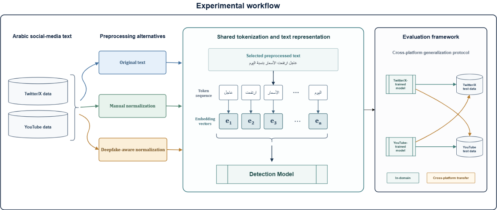
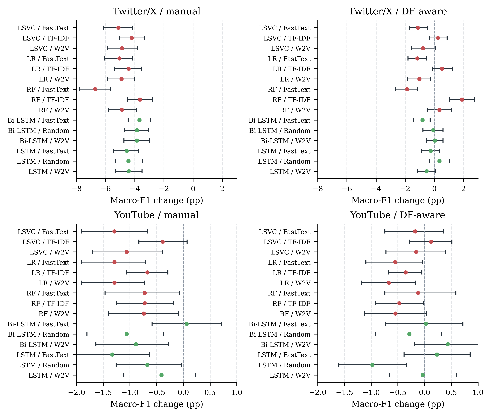
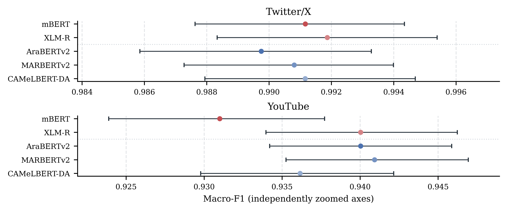

Abstract
The rapid growth of large language models has increased the spread of AI-generated deceptive Arabic text on social media, creating new challenges for robust detection across platforms. This paper addresses that problem through a controlled cross-platform study of Arabic deepfake text detection on Twitter/X and YouTube, under three controlled preprocessing views applied after initial dataset cleaning. The study uses platform-paired datasets of real and synthetic Arabic texts, compares machine learning, deep learning, and transformer-based models under both in-domain and cross-platform transfer evaluation. The results show that fine-tuned Arabic transformers were the strongest models overall, reaching up to 0.9912 Macro-F1 on Twitter and 0.9409 on YouTube in in-domain testing. Preprocessing affected performance, but its impact differed across platforms and model families: the original view text remained strongest overall, manual cleaning reduced performance, whereas deepfake-aware preprocessing offered a better, but still inconsistent, compromise. Cross-platform results were consistently lower than in-domain results, with the best transfer scores reaching 0.8364 from Twitter to YouTube and 0.9433 from YouTube to Twitter. Overall, the findings show that Arabic deepfake text detection is feasible, but robust cross-platform generalization remains an open challenge.
Keywords: Arabic deepfake detection, cross-platform detection, text preprocessing, social media, machine learning, deep learning, transformers
1. Introduction
Deepfakes are synthetic media generated by AI tools to mimic real content, and the phenomenon has spread to textual content. Recent large language models have substantially improved the fluency and coherence of generated text, so machine-generated material can closely resemble human writing. Arabic remains understudied in this literature even though it is widely used online, and most Arabic work has addressed fake news and rumour classification rather than explicitly identifying machine-generated text.
Detecting AI-generated Arabic text is difficult because Arabic has many varieties and spellings, its extensive use of prefixes, suffixes and clitics increases vocabulary sparsity, and optional diacritics, dialect mixing, code-switching and informal writing add noise. Twitter/X and YouTube are complementary but structurally distinct settings: short, fast-moving posts against longer, more contextualized comment threads. This study provides a comparative, controlled evaluation across both platforms, treating preprocessing as an explicit experimental variable rather than a fixed preliminary step.
Objectives
- Compare how well different modelling methods work for Arabic deepfake text detection on Twitter/X and YouTube, across machine learning, sequence and transformer families, to establish a performance hierarchy within one evaluation setting.
- Examine how word representation and preprocessing choices affect detection performance, to determine whether preprocessing improves performance or removes useful linguistic and platform cues.
- Assess cross-platform robustness by examining transfer between Twitter/X and YouTube without retraining or target-domain adaptation.
Research questions
- RQ1 Under in-domain evaluation, which implemented ML, sequence and transformer configurations perform best on Twitter and on YouTube?
- RQ2 How do the preprocessing variants affect in-domain performance across representation strategies and model families?
- RQ3 How robust are source-trained configurations under cross-platform transfer in both directions without retraining?
- RQ4 Where do errors concentrate across deceptive types and platform-specific metadata categories?
Hypotheses
- H1 Fine-tuned contextual Arabic transformers will produce the highest performance on both platforms.
- H2 Preprocessing effects will be significant across representation strategies and model families.
- H3 The detection model performs better when evaluated on the same domain as its training data.
2. Methodology
2.1 Dataset
Two platform-paired corpora of real and synthetic Arabic texts were used, one from Twitter/X and one from YouTube. Each generated text is a prompt-based deceptive rewrite of a human source text, produced under one of six deception strategies. The two corpora were constructed independently, at different times and with different generators, so platform and generator vary together.
| Deceptive type | Description | YouTube | |
|---|---|---|---|
| Exaggeration | Rewrites the text by amplifying claims or emotions while preserving the main topic. | 2,289 | 2,543 |
| Omission | Removes key contextual details, resulting in a misleading interpretation. | 2,286 | 2,403 |
| Contradiction | Introduces statements that conflict with the original meaning while remaining plausible. | 2,299 | 2,406 |
| Satirical tone | Rewrites the text in an ironic or mocking style while keeping misleading implications. | 2,376 | 2,441 |
| Clickbait phrasing | Reformulates the text using attention-grabbing, emotionally charged wording. | 2,364 | 2,421 |
| Mixed truths | Combines correct information with misleading or fabricated details. | 2,333 | 2,423 |
| Total | Total number of generated deceptive examples across all sub-types. | 13,947 | 14,637 |
2.2 Preprocessing views
Preprocessing is the controlled experimental factor. Each platform's texts are evaluated under three views, applied after the initial corpus cleaning:
- Original — the already-cleaned corpus, without additional experimental normalization.
- Manual — conventional aggressive normalization: URLs, mentions, hashtags, emojis, diacritics, Latin spans, repeated characters and punctuation are removed or strongly normalized.
- Deepfake-aware — task-oriented normalization that aims to reduce noise while preserving potentially informative surface cues.
The two platforms use different deepfake-aware implementations. On Twitter/X, URL, mention, hashtag, number and Latin spans are replaced with typed markers and diacritics are retained; on YouTube, URL, mention, hashtag and Latin spans are removed, only numbers are replaced, and diacritics are stripped. Platform comparisons therefore combine corpus properties with different transformations.
2.3 Model families
Three families are compared under identical splits. Classical machine learning combines LinearSVC, logistic regression and random forest with TF-IDF, Word2Vec-CBOW and FastText representations (nine configurations). Sequence models combine LSTM and Bi-LSTM with randomly initialized, Word2Vec-CBOW and FastText embeddings (six configurations). Transformers fine-tune AraBERTv2, MARBERTv2 and CAMeLBERT, with mBERT and XLM-R added as multilingual comparators in a supplementary in-domain analysis.
2.4 Evaluation protocol
In-domain evaluation uses fixed held-out splits per platform. Cross-platform evaluation applies a source-platform model to the other platform's test set without retraining or target-domain adaptation, keeping the source pipeline's preprocessing and tokenization attached to the model.

3. Experimental setup
All experiments ran under a fixed evaluation protocol across both platforms and all preprocessing views, using identical held-out test splits and exact-text de-leakage against the test partition before fitting.
- Random seed
- 42 (single seed)
- Max input length
- 128
- ML classifiers
- Balanced class weighting, C = 1.0
- Random forest
- 200 trees, max depth 30, sqrt features
- Sequence models
- 25k vocab, embed 128, hidden 64, batch 64, 5 epochs, AdamW
- Static embeddings
- 128 dimensions, 25 epochs
- Transformers
- Batch 64, 5 epochs, LR 2 × 10−5
- Weight decay
- 1 × 10−3
- Warmup ratio
- 0.1
- Gradient clipping
- 1.0
- Dropout
- 0.10
- Checkpoint selection
- Validation Macro-F1
3.1 Statistical analysis
- Pairwise model comparisons on the same held-out texts use two-sided exact McNemar tests, with each held-out text as the unit of analysis.
- Family-level preprocessing comparisons use two-sided Wilcoxon signed-rank tests over matched model configurations: 9 machine-learning, 6 sequence-model and 3 transformer pairs per comparison.
- Macro-F1 differences are accompanied by percentile bootstrap 95% confidence intervals obtained by resampling the held-out test predictions.
- P-values are adjusted with the Benjamini–Hochberg false discovery rate procedure; adjusted values below 0.05 are treated as statistically significant.
- Repeated Wilcoxon p-values reflect the small number of matched configurations and the discrete nature of the test, so family-level preprocessing tests are interpreted as exploratory alongside the magnitude of the differences.
4. Results
4.1 In-domain performance
Transformer-based models achieved the highest Macro-F1 on both platforms, followed by sequence models and then machine-learning classifiers. Manual preprocessing produced the clearest decline relative to the original view, while deepfake-aware preprocessing generally reduced that loss without consistently exceeding the original condition.
| Platform | View | ML mean | Sequence mean | Transformer mean | Worst model | Best model |
|---|---|---|---|---|---|---|
| Twitter/X | Original | 0.9581 | 0.9757 | 0.9906 | RF–TFIDF (0.9135) | CAMeLBERT (0.9912) |
| Manual | 0.9093 | 0.9344 | 0.9596 | RF–TFIDF (0.8770) | MARBERTv2 (0.9625) | |
| Deepfake-aware | 0.9548 | 0.9736 | 0.9857 | RF–TFIDF (0.9324) | MARBERTv2 (0.9869) | |
| YouTube | Original | 0.8678 | 0.8898 | 0.9390 | RF–TFIDF (0.8297) | MARBERTv2 (0.9409) |
| Manual | 0.8587 | 0.8826 | 0.9303 | RF–TFIDF (0.8225) | MARBERTv2 (0.9354) | |
| Deepfake-aware | 0.8645 | 0.8888 | 0.9318 | RF–TFIDF (0.8250) | MARBERTv2 (0.9369) |
| Platform | Family | Transformer | Comparison model | p-value | p-adjusted |
|---|---|---|---|---|---|
| Twitter/X | ML | CAMeLBERT | SVM | 1.55 × 10−10 | 4.66 × 10−10 |
| Sequence | CAMeLBERT | Bi-LSTM | 3.0 × 10−4 | 5.0 × 10−4 | |
| YouTube | ML | MARBERTv2 | Logistic regression | 1.26 × 10−27 | 3.78 × 10−27 |
| Sequence | MARBERTv2 | Bi-LSTM | 2.47 × 10−25 | 3.7 × 10−25 |
The selected transformers significantly outperformed the strongest machine-learning and sequence baselines in all four comparisons.
4.2 Preprocessing effects

| Platform | Family | Compare view | Mean Macro-F1 diff. | p-value | p-adjusted |
|---|---|---|---|---|---|
| Twitter/X | ML | Deepfake-aware | −0.0033 | 0.4258 | 0.4258 |
| ML | Manual | −0.0487 | 0.0039 | 0.0234 | |
| Sequence | Deepfake-aware | −0.0021 | 0.3125 | 0.375 | |
| Sequence | Manual | −0.0413 | 0.0312 | 0.0938 | |
| Transformer | Deepfake-aware | −0.0048 | 0.25 | 0.375 | |
| Transformer | Manual | −0.031 | 0.25 | 0.375 | |
| YouTube | ML | Deepfake-aware | −0.0033 | 0.0117 | 0.0352 |
| ML | Manual | −0.0091 | 0.0039 | 0.0234 | |
| Sequence | Deepfake-aware | −0.001 | 0.8438 | 0.8438 | |
| Sequence | Manual | −0.0072 | 0.0625 | 0.125 | |
| Transformer | Deepfake-aware | −0.0072 | 0.25 | 0.3 | |
| Transformer | Manual | −0.0088 | 0.25 | 0.3 |
Bold marks adjusted p-values below 0.05. An identical mean difference of −0.0033 is significant for YouTube machine-learning models but not for Twitter/X, so statistical significance here reflects consistency across matched configurations rather than practical magnitude.
4.3 Arabic-specific and multilingual encoders

The five encoders span a narrow range in the original view and their intervals overlap substantially on both platforms. Under a single seed these margins do not support a ranking among individual encoders; the multilingual and Arabic-specific groups are best described as comparable. The multilingual models are fine-tuned in-domain comparators, not general-purpose detectors of machine-generated text, and they were not extended to the cross-platform setting.
4.4 Error concentration by deception type
| Deception type | Twitter mean error (%) | YouTube mean error (%) |
|---|---|---|
| Original (real texts) | 4.3 | 10.0 |
| Clickbait phrasing | 0.5 | 3.8 |
| Contradiction | 8.2 | 24.7 |
| Exaggeration | 1.6 | 7.1 |
| Mixed truths | 1.9 | 13.2 |
| Omission | 17.7 | 24.4 |
Omission and contradiction are the most difficult categories on both platforms; clickbait phrasing is the easiest. These categories identify concentrations of detection errors; they do not establish whether models understand deception or assess factual accuracy.
4.5 Cross-platform transfer
| Family | Model | Embedding | Twitter → YouTube | YouTube → Twitter | ||||
|---|---|---|---|---|---|---|---|---|
| Original | Manual | DF-aware | Original | Manual | DF-aware | |||
| ML | SVM | TF-IDF | 0.6405 | 0.7746 | 0.5168 | 0.7453 | 0.7584 | 0.7552 |
| Logistic regression | TF-IDF | 0.6823 | 0.7861 | 0.5491 | 0.7290 | 0.7472 | 0.7313 | |
| Random forest | TF-IDF | 0.6211 | 0.6633 | 0.7550 | 0.6672 | 0.7212 | 0.6845 | |
| SVM | Word2Vec-CBOW | 0.6602 | 0.7594 | 0.7321 | 0.6287 | 0.6705 | 0.6284 | |
| Logistic regression | Word2Vec-CBOW | 0.6624 | 0.7583 | 0.7344 | 0.6250 | 0.6584 | 0.6243 | |
| Random forest | Word2Vec-CBOW | 0.6590 | 0.7517 | 0.7204 | 0.6456 | 0.6554 | 0.6485 | |
| SVM | FastText | 0.6904 | 0.7614 | 0.7613 | 0.5839 | 0.6724 | 0.5690 | |
| Logistic regression | FastText | 0.6804 | 0.7554 | 0.7607 | 0.5823 | 0.6710 | 0.5688 | |
| Random forest | FastText | 0.5990 | 0.7032 | 0.7155 | 0.7415 | 0.7700 | 0.6024 | |
| Sequence | LSTM | Random | 0.6369 | 0.7486 | 0.6350 | 0.5450 | 0.6335 | 0.4612 |
| LSTM | Word2Vec-CBOW | 0.6490 | 0.7550 | 0.6191 | 0.6566 | 0.6316 | 0.5171 | |
| LSTM | FastText | 0.6388 | 0.7317 | 0.5720 | 0.6353 | 0.6996 | 0.7030 | |
| Bi-LSTM | Random | 0.6211 | 0.7780 | 0.6506 | 0.7358 | 0.7129 | 0.5747 | |
| Bi-LSTM | Word2Vec-CBOW | 0.6569 | 0.8048 | 0.6319 | 0.4983 | 0.5994 | 0.5842 | |
| Bi-LSTM | FastText | 0.6434 | 0.7641 | 0.6454 | 0.6391 | 0.6840 | 0.5299 | |
| Transformer | AraBERTv2 | Contextual | 0.7356 | 0.8319 | 0.6582 | 0.9433 | 0.9070 | 0.9099 |
| MARBERTv2 | Contextual | 0.7195 | 0.8364 | 0.6845 | 0.9079 | 0.8823 | 0.9095 | |
| CAMeLBERT | Contextual | 0.7461 | 0.7760 | 0.7206 | 0.9090 | 0.8753 | 0.8372 | |
Cross-platform scores are consistently below in-domain scores. Manual preprocessing improved Twitter/X→YouTube transfer for every evaluated configuration, while the original view was strongest in-domain — preprocessing choice therefore depends on the intended deployment setting.
Hypothesis outcomes
- SupportedH1. Fine-tuned contextual Arabic transformers were the strongest model family on both platforms. This does not establish superiority across other datasets or training runs.
- Partly supportedH2. Preprocessing had an effect, but it was not consistent across platforms or model families, and no single preprocessing view prevailed in all contexts.
- SupportedH3. Cross-platform performance was consistently lower than in-domain performance, confirming that generalization across platforms remains difficult.
Scope. The conclusions should be interpreted within the scope of the present design, which is limited to two platforms and a controlled synthetic generation setup. The two corpora were built independently, at different times and with different generators, so platform and generator vary together; the transfer results describe transferability across independently constructed datasets rather than isolating platform effects.
All experiments used a single random seed, and bootstrap intervals reflect test-sample uncertainty rather than training-run variability. Exact-text removal cannot rule out overlap between human texts and their generated counterparts, because pair-level separation could not be verified. The study does not test newer generators, temporal drift, or broader cross-domain shifts beyond Twitter and YouTube.
Citation
@misc{alqahtani2026arabic,
title = {Arabic Deepfake Text Detection on Social Media: Controlled
Preprocessing and Cross-Platform Transferability},
author = {Alqahtani, Abdulaziz and Sunba, Amal and Helmy, Tarek},
year = {2026},
howpublished = {\url{https://github.com/pr-Abdulaziz/Arabic-deepfake-detection}}
}
A preprint record is not yet available. This entry will be replaced with the arXiv reference, including its DOI, once the preprint is posted.